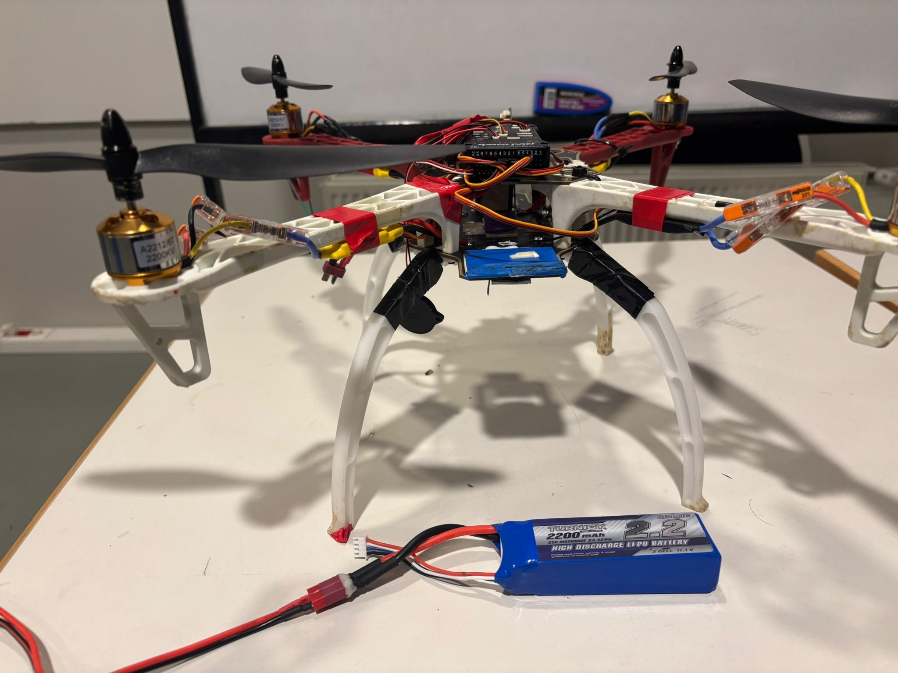
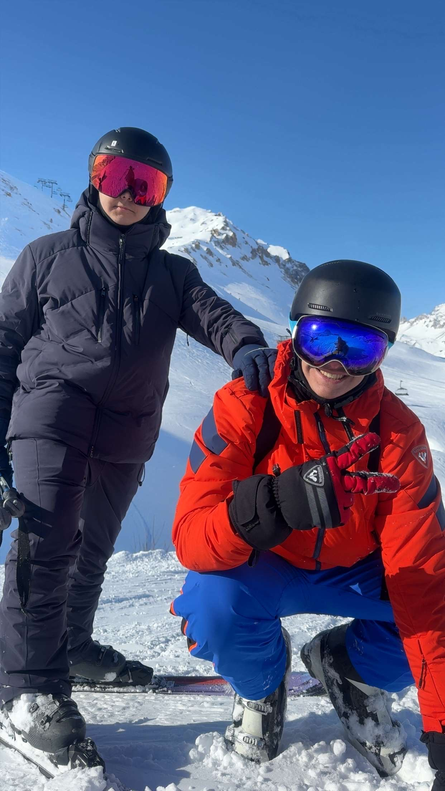
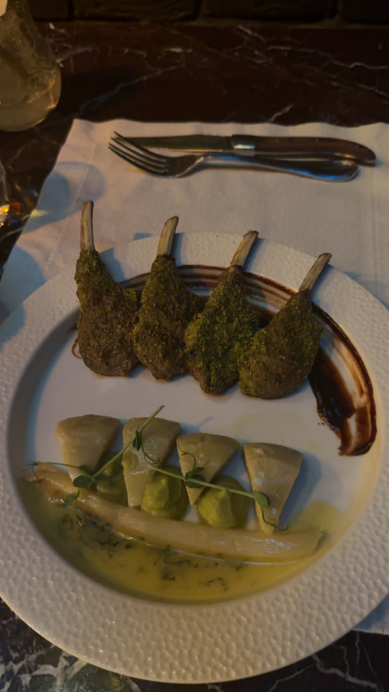

Hi, I'm

I am a high school student doing the SSP program from Turkey. I am currently staying at the Hurlbut Hall. I like learning new skills and exploring different areas such as cardistry, watchmaking, collecting stationeries and perfumery. My favorite subjects are math and physics. I love working on problems that need more than classical approaches, and doing hand-on projects that I can use my creativity. However, my favorite hobbies are skiing and eating. I like trying new foods all around the world. When I go to a new place, I always try to select the most uncommon menu item. I love playing drums, and I have played piano for 7 years whewn I was a child. Moreover, in my school I am in FRC, TEAMS and Koç Aviation club, where I build things and create clever solutions to problems using an engineering approach.
Pictures From My Life



